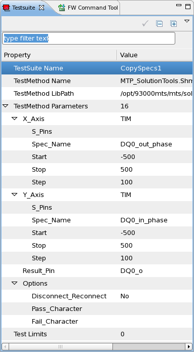

Parallel Shmoo test method
The ParallelShmoo test method provides a means of generating shmoo plots in multi-site mode on all enabled sites. That is, if four sites are enabled, one execution of the test method generates four shmoo plots (sites are enabled by means of the Site Control icon, on the System tab of the main toolbar).
You can also define which ASCII characters represent passed and failed tests in the plot. You can evaluate the test result with several existing scripts which have different hard coded passed/failed characters.
Parameters
Use the Test Suite window to set up the Parallel Shmoo (example):

The s eparameters are available:
Parameter |
Notes |
|---|---|
X_Axis |
|
S_pins |
If pins are specified in this parameter, the selected spec resource is shifted only for these pins. If no pins are specified, the spec resource is shifted for all applicable pins. |
Spec_name |
The name of the variable that is represented on the x-axis of the shmoo plot (the variable is included in the appropriate level file or timing file; it defines a specification). |
Start |
This is the starting value of the x-axis sweep, in ps for timing values and volt for level values. |
Stop |
This is the ending value of the x-axis sweep, in ps for timing values and volt for level values. |
Step |
This is the step size for the x-axis sweep, in ps for timing values and volt for level values. |
Y_Axis |
|
S_pins |
If pins are specified in this parameter, the selected spec resource is shifted only for these pins. If no pins are specified, the spec resource is shifted for all applicable pins. |
Spec_name |
The name of the variable that is represented on the y-axis of the shmoo plot (the variable is included in the appropriate level file or timing file; it defines a specification). |
Start |
This is the starting value of the y-axis sweep, in ps for timing values and volt for level values. |
Stop |
This is the ending value of the y-axis sweep, in ps for timing values and volt for level values. |
Step |
This is the step size for the y-axis sweep, in ps for timing values and volt for level values. |
Result_pin |
The result pin (or pin group); it is shared by all the sites. |
Disconnect_reconnect |
The devices under test are disconnected and reconnected before each test to bring them to a defined state. The default is: no special activity, because the device is already connected before the first test. |
Pass_Character |
Specify a single ASCII character which is displayed in the map for a passed test. It must be different from the specified Fail Character, otherwise a warning message will be issued in the report window. The default value is " " (white space). |
Fail_Character |
Specify a single ASCII character which is displayed in the map for a failed test. It must be different from the specified Pass Character, otherwise a warning message will be issued in the report window. The default value is "#". |
The results are stored in a result file within the device's shmoo directory. The name of this result file is automatically generated as <test suite name><timestamp> (for example: pSHmoo_2005-10-31_09:08:22).
The results from the site that is in focus are displayed in the report window as well.
An example of a result file with non-default pass/fail characters is shown below:
SHMOO DATA
Pin DQ1_o
Pin DQ1_in_phase vs. DQ1_out_phase
Site: 1
PARAMETER:
x-Axis: DQ1_out_phase
Start: -500
Stop: 500
Step: 50
y-Axis: DQ1_in_phase
Start: -500
Stop: 500
Step: 50
Pass Character: 'v'
Fail Character: '-'
500.00 [ps] --------------------- Left Edge: n.a. Right Edge: n.a. Width: n.a.
450.00 [ps] --------------------- Left Edge: n.a. Right Edge: n.a. Width: n.a.
400.00 [ps] --------------------- Left Edge: n.a. Right Edge: n.a. Width: n.a.
350.00 [ps] --------------------- Left Edge: n.a. Right Edge: n.a. Width: n.a.
300.00 [ps] --------------------- Left Edge: n.a. Right Edge: n.a. Width: n.a.
250.00 [ps] --------------------- Left Edge: n.a. Right Edge: n.a. Width: n.a.
200.00 [ps] --------------------- Left Edge: n.a. Right Edge: n.a. Width: n.a.
150.00 [ps] --------------------- Left Edge: n.a. Right Edge: n.a. Width: n.a.
100.00 [ps] --------vvvvv-------- Left Edge: -100.000 Right Edge: 100.000 Width: 200.000
50.00 [ps] --------vvvvv-------- Left Edge: -100.000 Right Edge: 100.000 Width: 200.000
0.00 [ps] --------vvvvv-------- Left Edge: -100.000 Right Edge: 100.000 Width: 200.000
-50.00 [ps] --------vvvvv-------- Left Edge: -100.000 Right Edge: 100.000 Width: 200.000
-100.00 [ps] --------vvvvv-------- Left Edge: -100.000 Right Edge: 100.000 Width: 200.000
-150.00 [ps] --------------------- Left Edge: n.a. Right Edge: n.a. Width: n.a.
-200.00 [ps] --------------------- Left Edge: n.a. Right Edge: n.a. Width: n.a.
-250.00 [ps] --------------------- Left Edge: n.a. Right Edge: n.a. Width: n.a.
-300.00 [ps] --------------------- Left Edge: n.a. Right Edge: n.a. Width: n.a.
-350.00 [ps] --------------------- Left Edge: n.a. Right Edge: n.a. Width: n.a.
-400.00 [ps] --------------------- Left Edge: n.a. Right Edge: n.a. Width: n.a.
-450.00 [ps] --------------------- Left Edge: n.a. Right Edge: n.a. Width: n.a.
-500.00 [ps] --------------------- Left Edge: n.a. Right Edge: n.a. Width: n.a.Functional changes
- Introduced before SmarTest 6.3.2
- MTP 3.0.1: The parallell shmoo test methods have been consolidated into a sinlge test method with an updated interface.